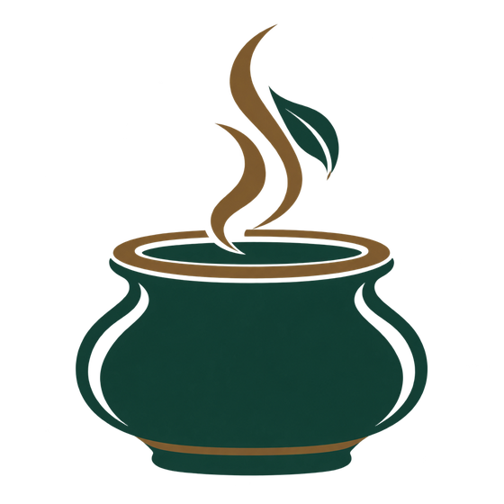
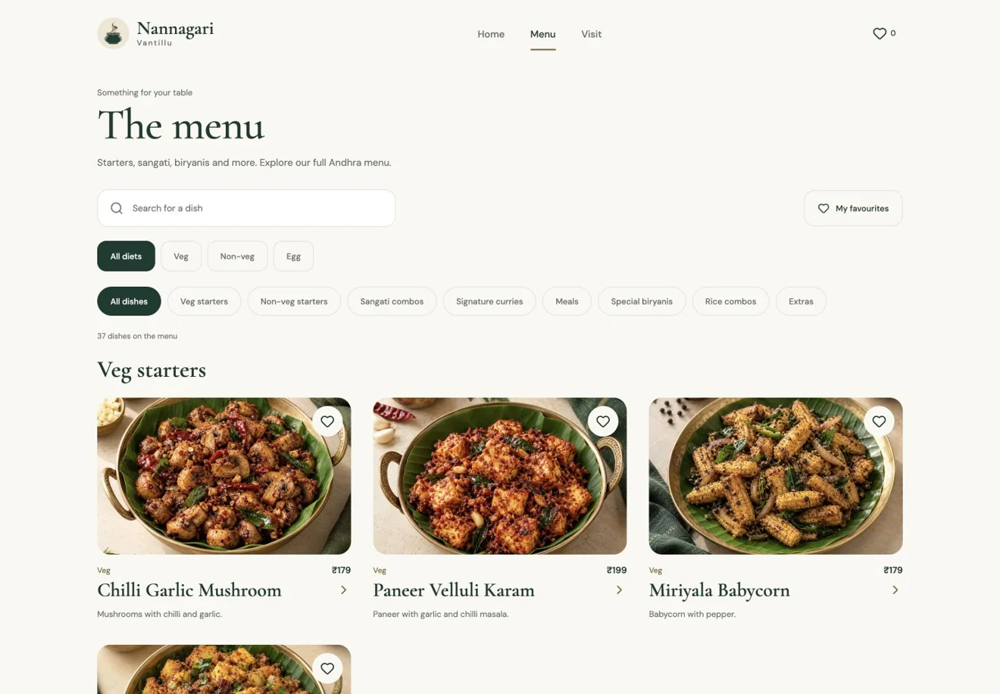
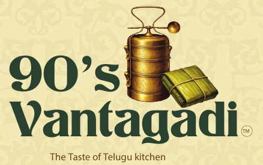
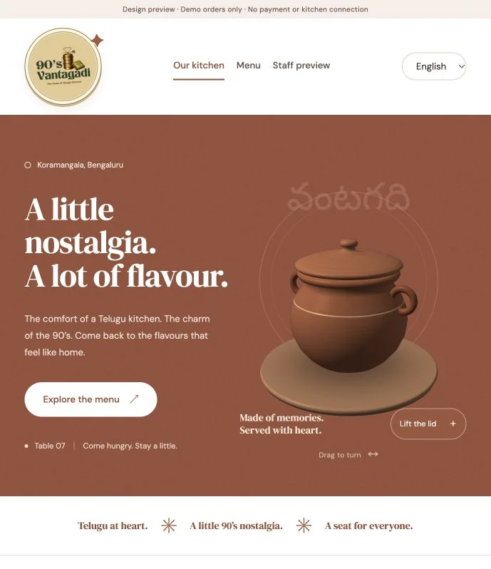

SaiGanesh Kalimisetty
Product Management & UX Design
I’m pursuing an MSc in Product Management & UX Design at SKEMA × POLIMI. I enjoy figuring out how a service can feel clearer and easier to use, then trying those ideas in projects of my own.
Working across retail and hospitality has given me a practical view of customer needs, team coordination and everyday operations. That experience shapes how I approach product and UX.
I’m currently designing and developing two restaurant websites, with support from AI tools. You can explore them below, reach me by email, or find me on LinkedIn and GitHub.
Projects

Nannagari Vantillu / Andhra restaurant websiteIn progressI’m designing and developing a restaurant website focused on finding dishes and exploring an Andhra menu.
What I’m building
Menu search, dietary and category filters, favourites, a basket interface and visit information, with ongoing work on the mobile experience.
Development preview of the menu. This project is still in development. The basket is a demonstration; orders are not sent to a restaurant.

90’s Vantagadi / Telugu restaurant websiteIn progressI’m exploring how a Telugu kitchen can bring its nostalgic 90’s identity online while keeping the menu easy to reach.
The question I’m working on
How can the website give people a feel for the kitchen’s character and still help them move quickly from the introduction to the food?My design direction
I’m working on a brand-led introduction, an animated clay pot, menu browsing and language selection. I want the clay pot to support the kitchen’s identity and give the introduction a sense of character.The decisions I’m exploring
How much space to give the introduction before showing the food, where language selection belongs, and how to keep animation from delaying access to the menu.What I want to test next
I plan to ask people what kind of restaurant they expect after seeing the introduction, then watch whether they can find the menu and change language without help. That feedback will guide the balance between atmosphere and everyday use.
Development preview of the restaurant introduction. This is a working prototype. Preview orders are demonstrations, with no payment or kitchen connection.
Experience
Snowflake Gelato / Assistant Manager2024
Edinburgh
I managed inventory and quality checks, supported staff recruitment and training, and worked with stakeholders on branding and service.
That experience connects to how I approach product work: looking at the people delivering a service as well as the people using it. Training colleagues is a useful reference for writing clear instructions and thinking through each step of an experience.
Harvey Nichols / Retail Operations Management2024
Edinburgh
I supported visual merchandising and stock organisation, processed sales transactions, and worked with sales targets and KPIs.
I bring that experience into UX by thinking about what people notice first, how information is grouped, and how easily they can find what they need. It also gives me a practical starting point for considering customer needs alongside business goals.
Portavadie / Graduate Management2023
Scotland
I managed guest reservations and coordinated with housekeeping and maintenance to address guest needs.
That work connects to my interest in service design. A guest’s experience depends on how information moves between teams, so I’m interested in the handovers behind an interface as well as what someone sees on screen.
Reiss / Retail Management Graduate2022–2023
London
I handled customer enquiries and complaints, and collaborated with sales and visual merchandising teams on product displays.
Those conversations are a starting point for my interest in UX: listening to what someone is trying to do, understanding what is unclear, and explaining the next step. My work on displays also connects to how I think about hierarchy and product discovery.
Education & training
MSc Product Management & UX Design / SKEMA × POLIMI2026–2027
SKEMA Business School × POLIMI Graduate School of Management
Currently studying · Expected completion December 2027Google UX Design Professional Certificate / Coursera2025
Coursera · Completed April 2025
MBA Luxury Brand Management / Glasgow Caledonian University2022–2023
Glasgow Caledonian University, London · Merit
Bachelor of Business Administration / MS Ramaiah College2018–2021
MS Ramaiah College of Arts, Science and Commerce, Bangalore
Skills
User research & usability / UX training
Training in user research, empathy mapping, user personas, journey mapping and usability testing through the Google UX Design Professional Certificate. These methods support understanding user needs and evaluating design ideas.
Interface design & prototyping / Figma
Training in wireframing, interaction design and prototyping using Figma. My current restaurant website projects focus on clear menu navigation and layouts that work across screen sizes.
Product management / Current MSc studies
Current studies include product strategy, user research, Agile and Scrum, and digital product development. I’m building this foundation alongside practical restaurant website projects.
Retail operations & customer service / Retail & hospitality
Professional experience in inventory management, visual merchandising and sales operations, alongside handling customer enquiries, complaints and returns across retail and hospitality roles.
Team coordination / Training & collaboration
Experience supporting staff recruitment and training, managing guest reservations, and coordinating with sales, housekeeping and maintenance teams to address customer and guest needs.
Get in touch
Have a question about my work or something you’d like to share? Send me an email.